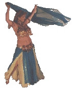
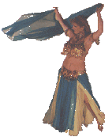
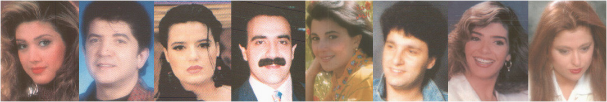
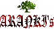

In order to listen to these Arabic songs you must have a RealAudio Player .
Choose your category and enjoy.
This site was awarded with the three stars as
the site of the month, January 1998, among the Distinguished Arab Sites in Internet World
Magazine/ Arabic Edition.
This site will be updated continuously and if you have
any requests of songs , I´ll do my best to bring them in. Just send me an E-mail

Turkish Music
Greek Music Clips
spanish music (Gipsy Kings)
|  | Popular music |  |
| Amro Diab | Simon 7adsity | Elin Khalaf | Various |
| Shawakna | Galbi M3allag Fiye | Sabbabin al shaj | Al Daraoish |
| Ragheb 3alama | 7amid al Sha3ri | Wael Kfoury | |
| Moghram Ya Lail | 3eini | Raye7 3al Jaish | |
| Tawám Ro7i | Rabi3 Al Khawli | Fayroz Cover | |
| Diana | Nawer 3aleina ya amar | Mix | Ammaneh |
|  |
Classical & Oldies
| National music |
| Various | Al Sanabel | Kofia | FATEH | Marcel Khalifa | Julia Butros |
| Sha3b Mokafe7 | Ya 3oshak Al Ard | Baladi | Men Rafah Lel Nagourah | Ya Watan | Wain al malayin |
| 3osha´al ard | 3awasifa | Al Bul-bul Ghanna | Klashenkof | Ya Tair Al Janoubi | Thairin |
| Intifada | Esma3 | Ibn al thawra | Ana Samed | Tarikh | |
| Ya Qudsu Ya Madinati | Djanoubion | Swedish demonstration song | Karamah | ||
| Ana esmi sha3bu Filastini | Wa Onadikom | ||||
| Tallo Rjalna | Watani 7orra | ||||
| Beirut | |||||
| 3enwan al bayt |
| Wanna make some money ? Visit alladvantage.com which offers cash money for the time we spend online surfing the net. I spend many hours online anyway, so I might as well get paid for it . The minimum you will get at the end of each month will pay for your Internet access. So, you will save money for doing nothing you are not doing already. Click here to read about them and sign up to start making money, some people are making more than a $1000 a month, and this information is not from their site, it is from an independent source..... the more friends you tell about this idea, the more money you make. It will take a minute to sign up. |
Visit the BIGGEST collection of ARABIC AUDIO sites on the net
_.-~*~-._.-'~'-._.-~*~-._  _.-'~'-._.-~*~-._.-'~'-._